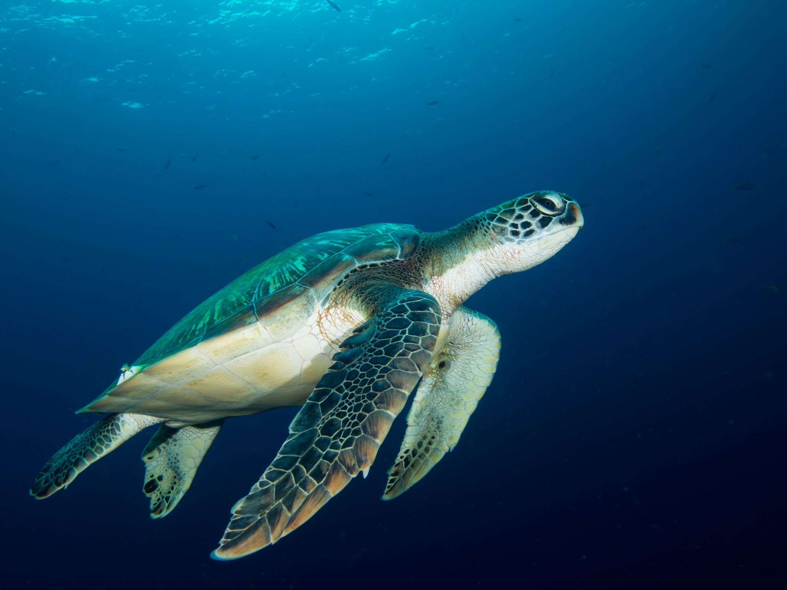
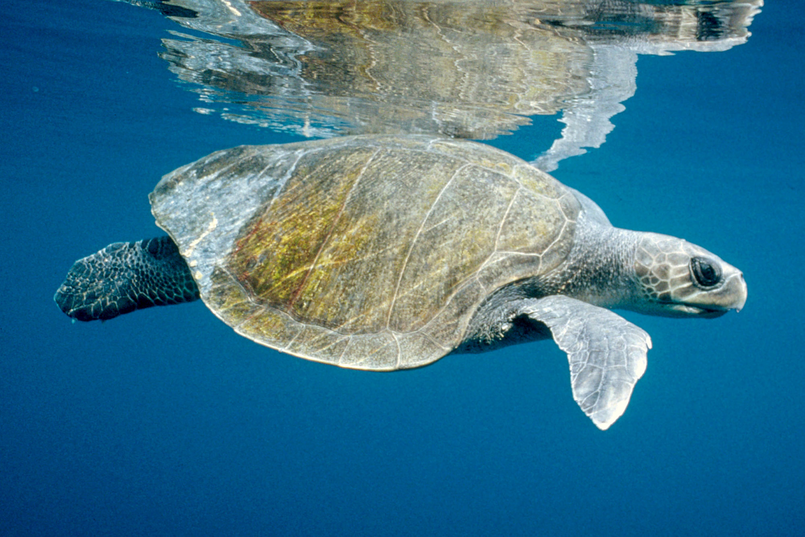

1.Green Turtle (Chelonia mydas)
The green turtle is one of the seven species of sea turtle found worldwide,
and is the most widespread. It can grow up to 1.5m in length and weigh up
to 200kg. A female green turtle will journey back to the same beach every
2-5 years to lay her eggs, often thousands of kilometres. After 45-70 days,
the babies hatch and make a dash for the sea, but many don't make it. Green
turtles are an endangered species due to hunting for their meat and eggs,
as well as destruction and pollution of their habitats and nest sites.

2.Hawksbill Turtle (Eretmochelys imbricata)
Hawksbills are called from their thin, pointed beaks. Their shells
also contain a characteristic pattern of overlapping scales that
produce a serrated edge. These colorful and patterned shells make
them incredibly desirable and are usually marketed as "tortoiseshell" in marketplaces.
Hawksbills are mostly found throughout the world's tropical waters, particularly
on coral reefs. They consume sea anemones and jellyfish as well as sponges, which
they extricate from cracks in the reef with their short pointed beaks. Sea turtles
are the surviving representatives of a species of reptiles that have roamed our
oceans for the last 100 million years. They are an essential connection in marine
ecosystems, contributing to the health of coral reefs and the water.

3.Olive Ridley (Lepidochelys olivacea)
With an estimated 800,000 nesting females per year, the olive ridley
turtle (Lepidochelys olivacea) is the most prolific marine turtle in
the world. It is an omnivore that lives in the tropical parts of the
South Atlantic, Pacific, and Indian Oceans. Females achieve sexual
maturity after around 15 years and many nest every year, laying clutches
of about 100 eggs. The olive ridley has one of the most unusual nesting
behaviors, with hundreds to thousands of females coming ashore to lay their
eggs in what is known as a "arribada" in specific areas. Solitary
nesting has declined in Bangladesh, Myanmar, Malaysia, and Pakistan.
Despite the large number of olive ridleys that nest in Orissa, India,
this species is not widespread.

4.Loggerhead (Caretta caretta)
Loggerhead turtles are so-called because of their strong jaw
muscles, which allow them to smash hard-shelled prey. In
comparison to other sea turtles, they are less likely to
be hunted for their flesh or shell. Bycatch, or the unintentional
capture of marine creatures in fishing gear, is a major issue
for loggerhead turtles. The most common turtle in the
Mediterranean is the loggerhead, which nests on beaches
from Greece and Turkey to Israel and Libya. Sea turtles
are an important connection in marine ecosystems, helping
to keep coral reefs and sea grass beds healthy.

5.Leatherback (Dermochelys coriacea)
Leatherback turtles get their name from its shell, which is leathery rather than rigid like other turtle shells.
They are the biggest and most migratory sea turtle species, spanning both the Atlantic and Pacific Oceans. Every summer and fall, Pacific leatherback turtles migrate from breeding beaches in the Coral Triangle all the way to the California coast to dine on the plentiful jellyfish.
Despite their widespread distribution, the number of leatherback turtles has dropped dramatically over the last century as a result of intensive egg collecting and bycatch in fisheries. According to the IUCN, the global status of leatherback turtles is Vulnerable, although certain subpopulations (such as those in the Pacific and Southwest Atlantic) are Critically Endangere